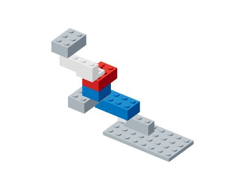

#577 tip-walk
11 件 · test_id
vbede43afa649ad52230两个实际 case 与结构
重建：从四视图与 BOM 恢复；规划：从空场装配全部件。完整题面在冻结 inputs 分片，答案在 ground-truth 分片。
{
"cases": [
{
"id": "2a565822aa6aa95869d9dfa2",
"kind": "reconstruct",
"condition": "ordinary"
},
{
"id": "6f2c0629cf892e145c275a7e",
"kind": "plan",
"condition": "default"
}
],
"structure": {
"version": 1,
"parts": [
{
"id": "p0",
"partId": "3035",
"color": "gray",
"x": 4,
"y": 0,
"z": 0,
"turn": 0
},
{
"id": "p1",
"partId": "3622",
"color": "gray",
"x": 5,
"y": 1,
"z": 1,
"turn": 2
},
{
"id": "p2",
"partId": "3004",
"color": "white",
"x": 5,
"y": 4,
"z": 1,
"turn": 1
},
{
"id": "p3",
"partId": "3001",
"color": "blue",
"x": 3,
"y": 7,
"z": 2,
"turn": 2
},
{
"id": "p4",
"partId": "3001",
"color": "gray",
"x": 2,
"y": 10,
"z": 3,
"turn": 1
},
{
"id": "p5",
"partId": "3003",
"color": "blue",
"x": 3,
"y": 13,
"z": 4,
"turn": 3
},
{
"id": "p6",
"partId": "3002",
"color": "red",
"x": 3,
"y": 16,
"z": 3,
"turn": 1
},
{
"id": "p7",
"partId": "3023",
"color": "red",
"x": 3,
"y": 19,
"z": 4,
"turn": 1
},
{
"id": "p8",
"partId": "3022",
"color": "white",
"x": 3,
"y": 20,
"z": 5,
"turn": 3
},
{
"id": "p9",
"partId": "3010",
"color": "white",
"x": 1,
"y": 21,
"z": 6,
"turn": 2
},
{
"id": "p10",
"partId": "3002",
"color": "gray",
"x": 0,
"y": 24,
"z": 4,
"turn": 1
}
]
}
}